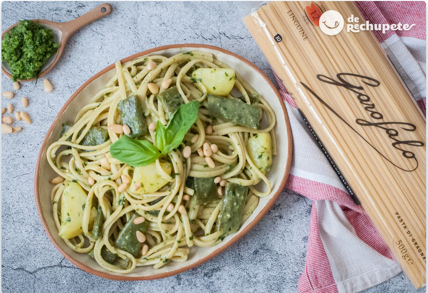
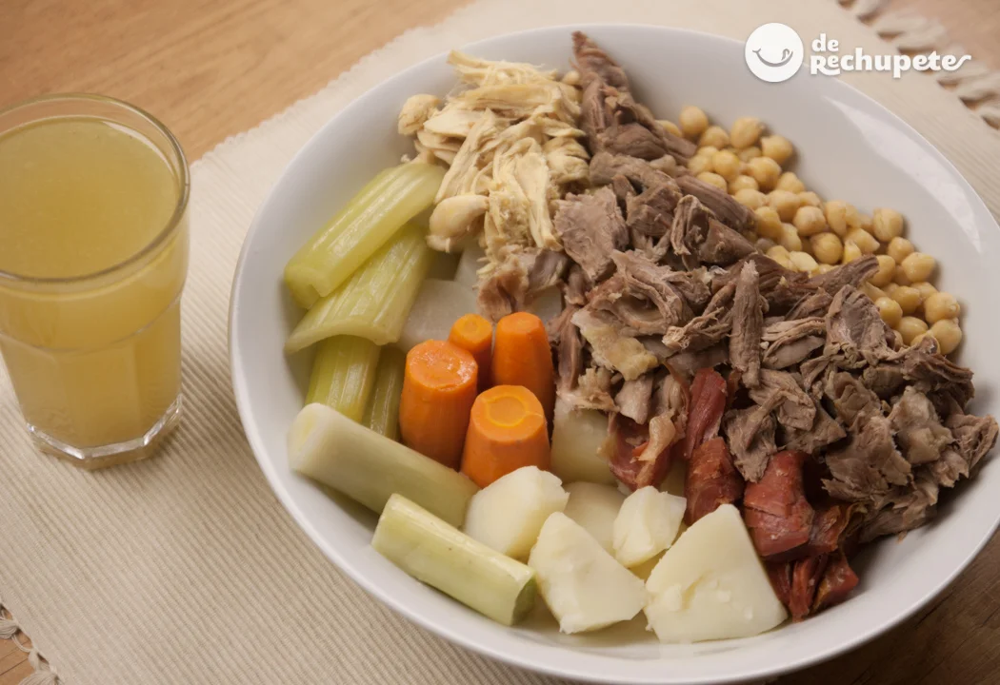
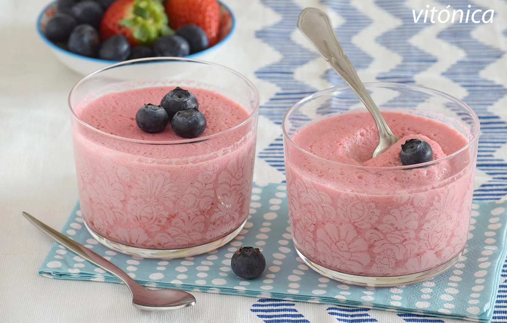

Cómo preparar un menú saludable
Estas recetas saludables son ideales para una buena alimentación, alguna dieta enfocada
a la pérdida de peso o para alguna ocasión especial. Son muy sanas y lo que es más importante,
increíblemente buenas.
-
Pasta trenette al pesto

- Puchero andaluz

- Mousse fresas y queso fresco

Volver al índice